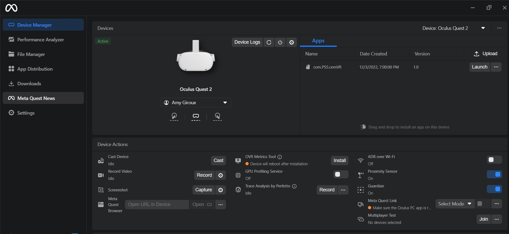
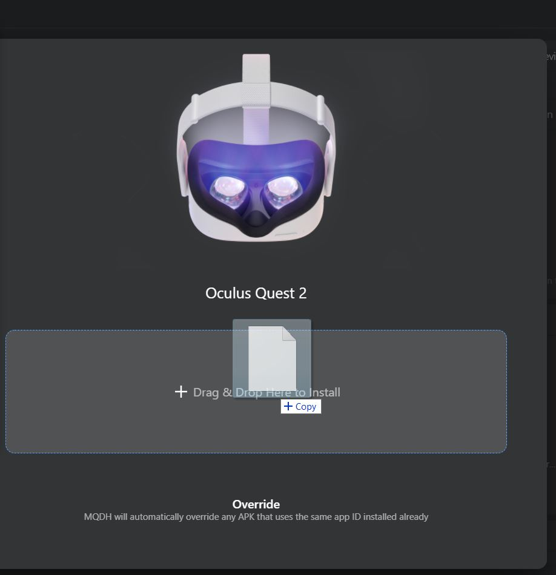
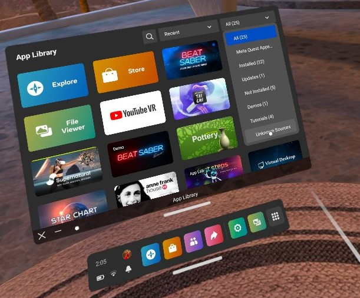
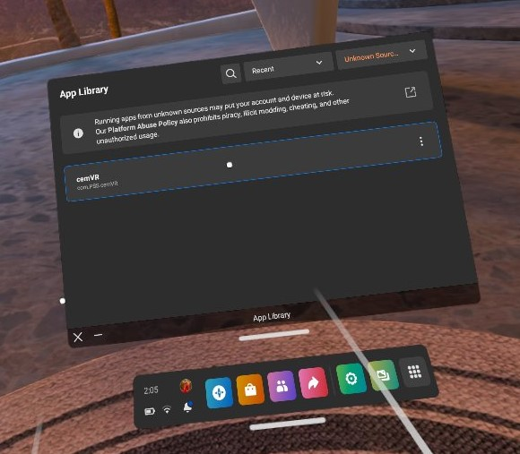

Quick Start Guide
There are two options for running this experience: a smaller interaction on a Quest 2, or the full experience from within the Unity editor. The instructions below describe how to use both of these options.
Quest 2
The APK for the Quest 2 version of CEM-VR is located here: cemVRv1.0.apk. Using your preferred method to sideload an APK to your Quest, place the APK on your headset. The following screen shots describe how to do this with Meta Quest Developeer Hub.
Meta Quest Developer Hub
With your Quest connected to your computer and the developer hub open, your device should be shown as connected (see Figure 1).
Figure 1
Drag and drop the APK onto your device (see Figure 2).
Figure 2
Once the file has finished copying, you may disconnect the cable and launch the program from within the headset. You will find the app listed under "Unknown Sources" from the App Library's dropdown (see Figure 3).
Figure 3
Once the Unknown Sources is selected, you will see CemVR as an option to load. Click on the app to load the experience (see Figure 4).
Figure 4
Unity Editor
Copy the "Giroux-CAP6117-SANC - crown" project source code to your hard drive. Open the project in the 2021.3.5f1 version of the Unity editor. Then under Assets->Scenes, open the LoadScene scene (see Figure 5).

Figure 5
After the LoadScene is selected, click on run to start the experience.